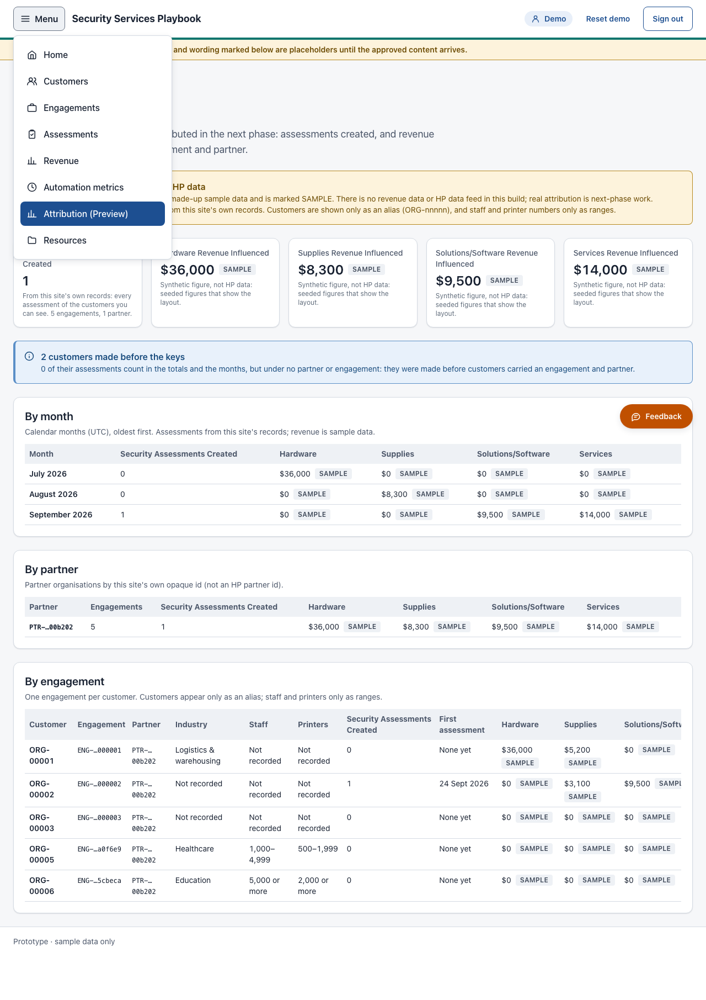
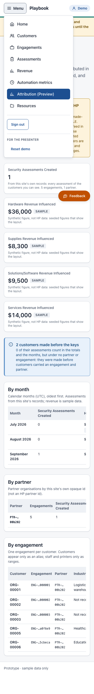
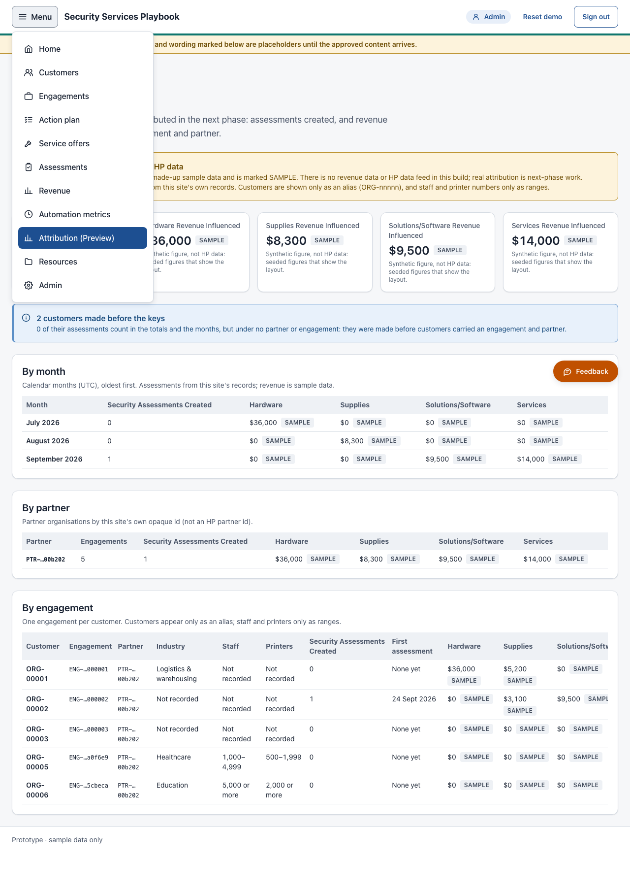
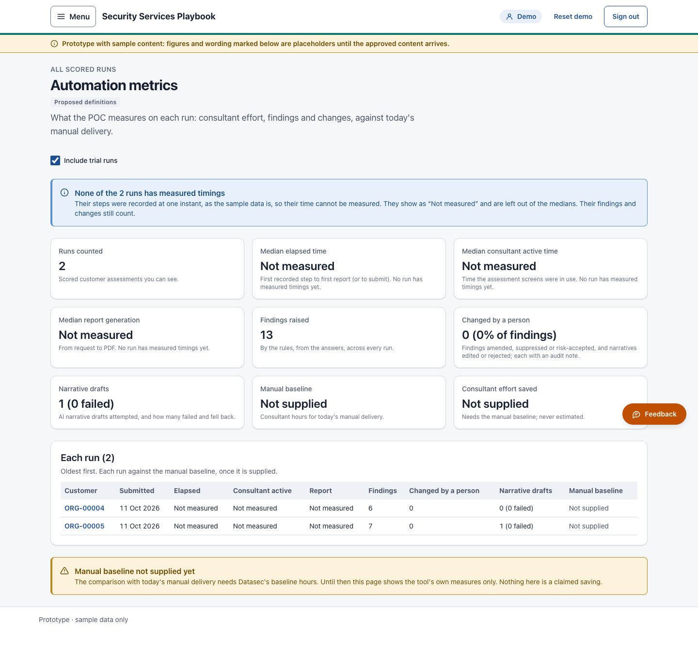
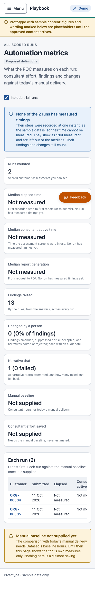
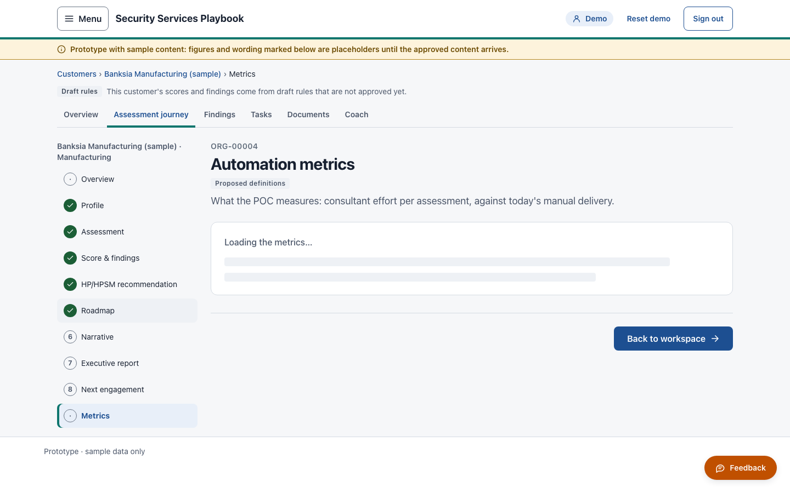
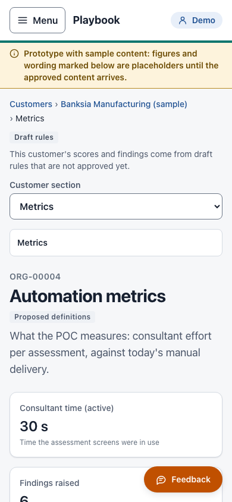
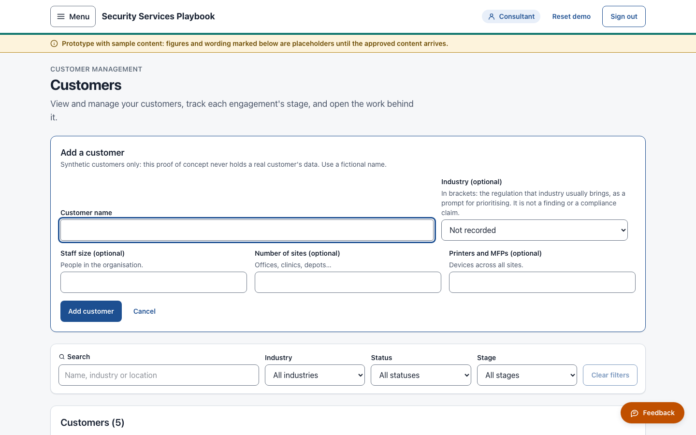
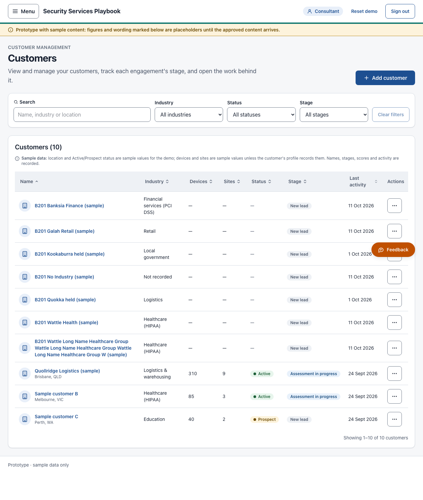

Reading copy for Kam, before HP's review on Tue 13 Oct 2026. Drafted 11 Oct 2026 for Friday. Datasec / HPSM-POC only.
All three pieces of work were independently tested by a separate QA seat:
Inside: screenshots (pages 2 to 8), the new words for you to approve, then three questions. Friday will make the recommendations separately.









The "Your tools (coming later)" placeholder is not pictured in this pack; the builder's evidence holds a shot of it.
Copied verbatim. "Where" says where it shows on screen. Key: NEW / CHANGED new or changed in the latest round, listed first; NEW IN PREVIEW, UNCHANGED written for the preview page (B202) and not changed since; EXISTING wording that already existed.
Only file paths were removed: one in row 4 (after "HIPAA)") and the bracketed file name in row 6. Nothing else changed.
| # | String | Where | |
|---|---|---|---|
| 1 | Button label "Your tools (coming later)" (no tooltip). | Home, the greyed-out placeholder | NEW |
| 2 | Hint under the industry select: "In brackets: the regulation that industry usually brings, as a prompt for prioritising. It is not a finding or a compliance claim." | Add / edit customer form | NEW |
| 3 | Option format "Healthcare (HIPAA)", "Financial services (PCI DSS)". Kam wrote "Finance". I mapped it onto the existing label "Financial services" (B09-C, and C-34 §F's words). | Industry select and Industry column | NEW |
| 4 | For Kam to check, not built: - HIPAA is a US law. For an Australian healthcare customer, the local equivalent may be what Kam means: the Privacy Act 1988 / My Health Records Act. - PCI DSS applies to anyone who takes card payments, Retail included. Should Retail name it too? - The other eight labels carry no framework, because the project's content has no source line for them. The Composer bundle lists five framework profiles (ISO 27001, Essential Eight, NIST CSF, SOC 2, HIPAA), but none is mapped to an industry. Candidates such as Government → Essential Eight / PSPF are suggestions only. | Not on screen: checks on row 3 | TO CHECK |
| 5 | API error text: "industry is one of the listed industries (contract Industry), or left out." | API answer when an unlisted industry is sent | NEW |
| 6 | Contract 0.15.0 changelog paragraph | API contract changelog | NEW |
| # | String | Where | Status |
|---|---|---|---|
| 39 | NEW notKeyed body (PROPOSED): [It has / They have] no assessments yet. | [Its / Their] N assessment(s) count(s) in the totals and the months, but under no partner or engagement. — then: [It was / They were] made before customers carried an engagement and partner. | Preview page, blue note body (true for 0, 1 and N) | NEW in B207, PROPOSED |
| 38 | OLD notKeyed body: {N} of their assessments count in the totals and the months, but under no partner or engagement: they were made before customers carried an engagement and partner. | Preview page, blue note body (the wording in the screenshots; false for 0) | REPLACED by B207 |
| 52 | ORG-nnnnn in the Automation metrics "Customer" column (was the customer's name) | Automation metrics, Customer column | NEW in B207 A1 |
| 53 | No alias (made before the keys) | Automation metrics and the linked customer page, for a customer with no stored alias | NEW in B207 A1, PROPOSED |
| 54 | Alias not available yet (no scored run) | Linked customer page, Demo caller, customer with no run | NEW in B207 A1, PROPOSED |
| 55 | ORG-nnnnn as the per-customer metrics page's customer line (was "name · industry") | Linked customer page, line above the heading, Demo callers only | NEW in B207 A1 |
| 37 | N customer(s) made before the keys | Preview page, blue note title | B202 words, moved |
| 1 | Attribution (Preview) | Menu entry | B202, unchanged |
| 2 | Preview: next phase – Attribution · Security Services Playbook (POC) | Browser tab title | B202, unchanged |
| 3 | Attribution | Page heading | B202, unchanged |
| 4 | Preview: next phase (the eyebrow renders it in capitals by CSS: PREVIEW: NEXT PHASE) | Line above the heading, and the tag under it | B202, unchanged |
| 5 | How Playbook activity could be attributed in the next phase: assessments created, and revenue influenced by category, per engagement and partner. | Page intro | B202, unchanged |
| 6 | SAMPLE: synthetic figures, not HP data | Yellow alert title | B202, unchanged |
| 7 | Every revenue figure on this page is made-up sample data and is marked SAMPLE. There is no revenue data or HP data feed in this build; real attribution is next-phase work. Assessments created are counted from this site's own records. Customers are shown only as an alias (ORG-nnnnn), and staff and printer numbers only as ranges. | Yellow alert body | B202, unchanged |
| 8 | SAMPLE (title: Synthetic figure, not HP data) | Mark beside every revenue figure | B202, unchanged |
| 9 | Security Assessments Created | Tile and column | B202, unchanged |
| 10 | Hardware / Supplies / Solutions/Software / Services Revenue Influenced | Tiles | B202, unchanged |
| 11 | From this site's own records: every assessment of the customers you can see. N engagement(s), N partner(s). | Assessments tile hint | B202, unchanged |
| 12 | Synthetic figure, not HP data: seeded figures that show the layout. | Revenue tile hint | B202, unchanged |
| 13 | $N (whole US dollars) | Money format | B202, unchanged |
| 14 | N (a count) | Counts in tiles and cells | B202, unchanged |
| 15 | By month / By partner / By engagement | Section titles | B202, unchanged |
| 16 | Calendar months (UTC), oldest first. Assessments from this site's records; revenue is sample data. | By month intro | B202, unchanged |
| 17 | Partner organisations by this site's own opaque id (not an HP partner id). | By partner intro | B202, unchanged |
| 18 | One engagement per customer. Customers appear only as an alias; staff and printers only as ranges. | By engagement intro | B202, unchanged |
| 19 | Assessments created and sample revenue influenced, by month | Table caption (screen reader) | B202, unchanged |
| 20 | Engagements, assessments created and sample revenue influenced, by partner | Table caption (screen reader) | B202, unchanged |
| 21 | Each engagement: customer alias, size ranges, assessments created and sample revenue influenced | Table caption (screen reader) | B202, unchanged |
| 22 | <section title>, table | Scroll area's name (screen reader only) | B202, unchanged |
| 23 | Month | Column header | B202, unchanged |
| 24 | Partner · Engagements | Column headers (By partner) | B202, unchanged |
| 25 | Customer · Engagement · Partner · Industry · Staff · Printers · First assessment | Column headers (By engagement) | B202, unchanged |
| 26 | Hardware · Supplies · Solutions/Software · Services | Category column headers | B202, unchanged |
| 27 | revenue influenced (sample) | Screen-reader ending of each category header | B202, unchanged |
| 28 | Month label, e.g. October 2026 (UTC month) | By month row headers | B202, unchanged |
| 29 | Shortened ids PTR-…xxxxxx / ENG-…xxxxxx (full id in the title) | Partner and engagement cells | B202, unchanged |
| 30 | ORG-nnnnn | Customer alias | B202, unchanged |
| 32 | Not recorded | No industry / staff / printers | B202, unchanged |
| 33 | None yet | No first assessment | B202, unchanged |
| 35 | Staff ranges 1–49 · 50–249 · 250–999 · 1,000–4,999 · 5,000 or more | Staff column (PROPOSED edges) | B202, unchanged |
| 36 | Printer ranges 0–24 · 25–99 · 100–499 · 500–1,999 · 2,000 or more | Printers column (PROPOSED edges) | B202, unchanged |
| 40 | Loading the preview… | Loading state | B202, unchanged |
| 42 | The preview could not be loaded | Error title | B202, unchanged |
| 45 | The service shows this preview to Admin, Consultant and Demo accounts. | Line shown when the service refuses the role | B202, unchanged |
| 46 | Not available to your role | Role screen title (Partner) | B202, unchanged |
| 47 | This preview is for Consultant, Admin and Demo users. | Role screen body (Partner) | B202, unchanged |
| 48 | Nothing to attribute yet | Empty state title | B202, unchanged |
| 49 | An engagement appears here once a customer is added. | Empty state body | B202, unchanged |
| 31 | Industry values (as recorded) | By engagement, Industry column (B200's labels) | B200, not new here |
| 34 | First-assessment day, e.g. 24 Sept 2026 (en-AU: Sept has four letters) | First assessment column | existing |
| 41 | Loading… | Before the session is read (shared wording) | existing |
| 43 | Try again | Error action (shared wording) | existing |
| 44 | describeFailure(...) sentences, e.g. Your role does not allow this. | Shared error wording | existing |
| 50 | Offline demo | Offline-demo tag in the header | existing |
| 51 | Automation metrics screen (item 5, N-3) | No string added in round 1 | none |
After the alias change, no other caption, header or hint on the Automation metrics screen changed; the column header still reads "Customer".
Reading copy; the cards on your board carry the same three. No recommendation here: Friday will make those.
None of this work is on the hosted site. Per the latest records, industry and the import change are on main; the preview page and the aliases passed their gate (B204 round 2), with merging still to do. Should main, with all of it, go to the hosted site before HP's review?
On the per-customer metrics page, the alias replaces the name above the heading, but the frame around every customer page (the breadcrumb and the journey rail) still shows the sample customer's name to Demo callers. The customer API also answers a Demo caller with the name. Leave as is, alias the frame too, or keep HP to the dashboard? (B207 A1-F1; B204 round 2, R2-N1.)
Customers created before aliases (the "keys") existed have no alias, so they show "No alias (made before the keys)" until the demo data is reset. Is that acceptable for Tuesday, or should the demo data be reset first?